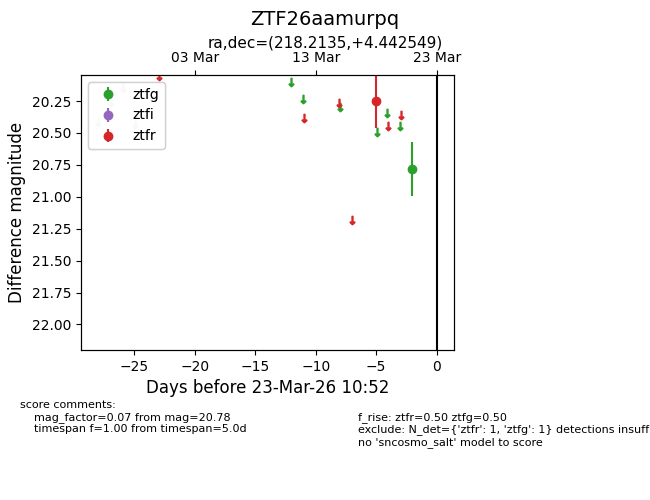
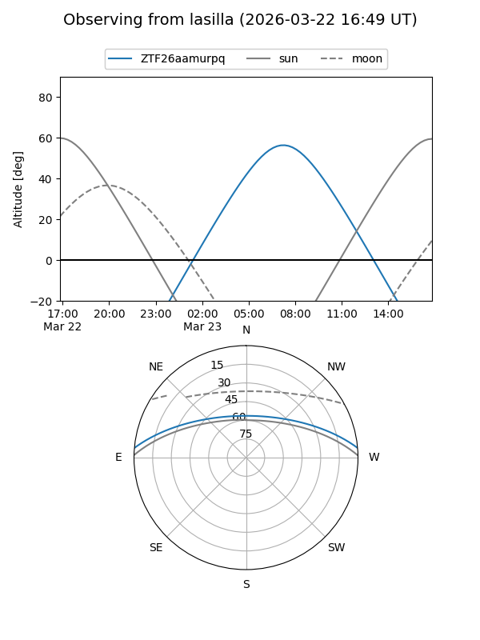
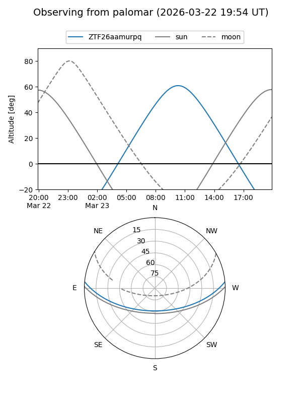

ZTF26aamurpq
Target ZTF26aamurpq at 2026-03-23 10:55
Aliases and brokers:
FINK: link
Lasair: link
ALeRCE: link
alt names
ZTF26aamurpq (ztf,fink_ztf)
Coordinates:
equatorial (ra, dec) = 218.2135,+4.44255
equatorial (HMS+DMS) = 14:32:51.25,+04:26:33.18
galactic (l, b) = (354.2437,+56.84219)
Flags:
Photometry:
last ztfg=20.78, ztfr=20.25
1 ztfg, 1 ztfr detections
Lightcurve

Visibility


Additional plots